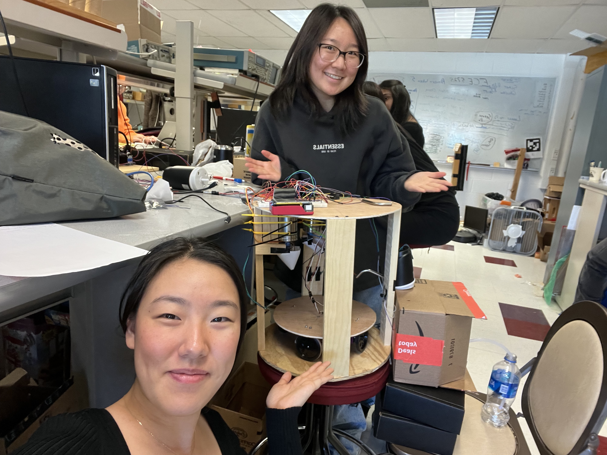

Embedded OS: RaspberryPi Latte Machine

Architecture: Quad-core Pipelined Processor
Abstract
The use of irony and sarcasm is so common among younger generations and across social media, but due to its subversive nature, its true meaning is left up to the interpretation of the recipient and can be taken as literal, offensive, or amusing based on context. In “The Complex Functions of Irony” (1992), Linda Hutcheon proposes that the function of irony in speech falls into categories of positive or negative affect. The positive functions of irony have inclusionary forces such as building rapport or relationships or adding humor to tough situations, while the negative functions have exclusionary forces like criticizing or dismissing others’ opinions. Some Reddit users follow a convention of self-annotating sarcasm with “/s” to reduce misunderstanding. By analyzing the marked “/s” comments and their immediate replies, we devised a computational method based on a sentiment detector that calculated the positive or negative affect of a sarcastic comment. We hypothesized that the effect of positive irony in tight-knit subreddits would be much stronger due to its inclusionary effect, while large subreddits spanning multiple groups would possess a weaker effect due to competing “in-groups”. Conversely, with negative irony, we predicted the opposite effect across tight-knit and diverse communities. With a transformer, we annotated sarcastic comments with their positive/negative affect across subreddits and found our hypothesis to be true in smaller communities like r/Cleveland versus r/Ohio.